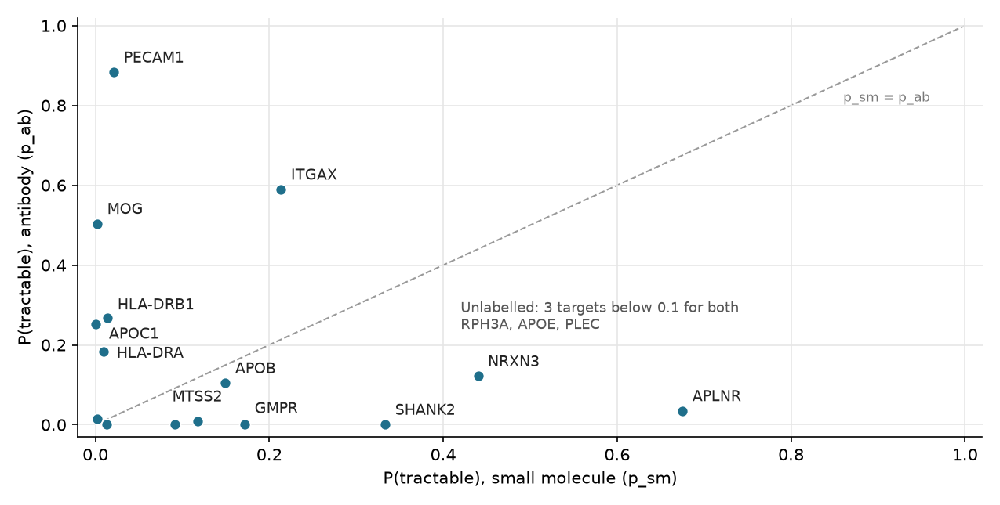
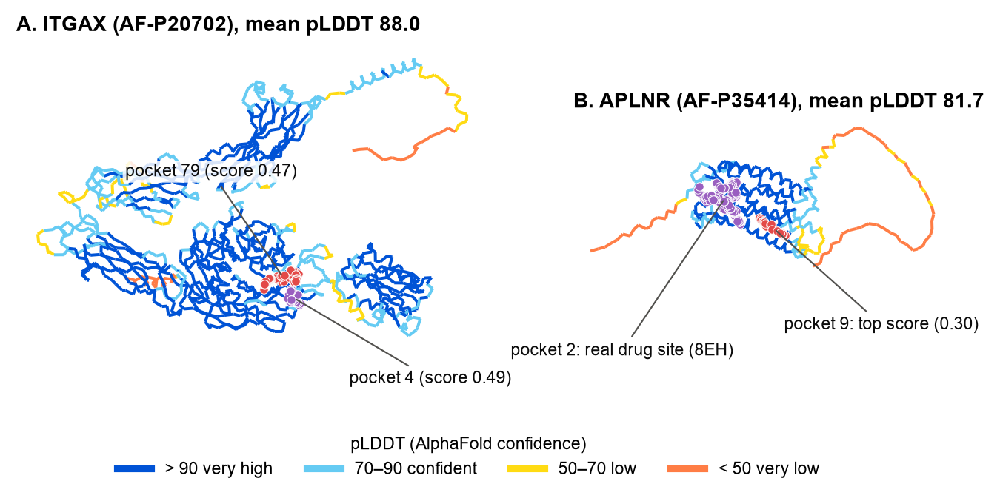
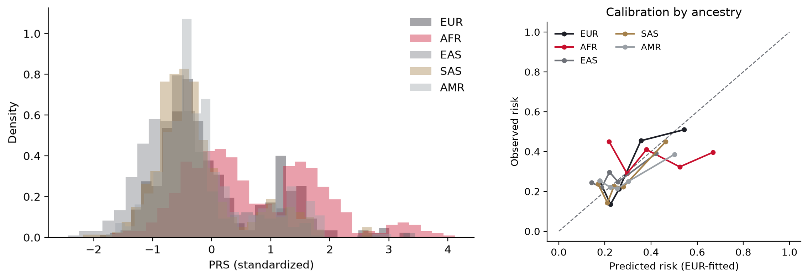

Is everything working, and what does a database say about APOE?
What I did
Set up the biot6900 environment, translated a short DNA sequence with BioPython and queried PubMed, UniProt, the PDB and the GWAS Catalog.
What I found
All four databases answered. The last query was rs7412, a missense variant in APOE.
Why it matters
APOE has the largest single effect on Alzheimer's risk, and it comes back in most of the later modules.
Which genes change in Alzheimer's at the RNA, protein and DNA level?
What I did
Combined brain RNA and brain protein from AMP-AD (Agora) with published Alzheimer's GWAS results, kept genes measured in all three and gave each a combined score.
What I found
Known Alzheimer's genes came out near the top. My top 15 fell into immune, lipid, synapse and blood-vessel groups.
Why it matters
A gene that shows up in all three layers is harder to dismiss as noise, so these 15 are worth following.


Which of my 15 genes look like proteins a drug could act on?
What I did
Used protein language model embeddings to compare my 15 proteins with proteins that already have drugs, for small molecules and for antibodies.
What I found
Most of my list are cell-surface proteins that suit antibodies. APLNR, a G-protein-coupled receptor, is the one clear small-molecule candidate.
Why it matters
Being linked to a disease doesn't make a gene a drug target, so I re-ranked the list by how drug-like each protein looks.
How my ranking changed
Each line joins a gene's Module 2 rank (left) to its final rank (right). Hover or tap a gene to see its scores.

Do my two lead targets have a place where a drug could bind?
What I did
Checked AlphaFold's confidence for ITGAX and APLNR, compared each with a structure solved in the lab and searched for pockets with fpocket.
What I found
APLNR has a confident pocket where a real drug binds. ITGAX's pieces are confident but it has no convincing pocket.
Why it matters
APLNR looks ready for a small molecule; for ITGAX I think an antibody is the realistic route.

My shortlist of Alzheimer's targets
For Portfolio 1 I put Labs 2 to 4 together into one report and ranked five targets across all three kinds of evidence.
| # | Target | Drug type | Evidence |
|---|---|---|---|
| 1 | APLNR | small molecule | Module 2 rank 10; a confident pocket where a real drug binds |
| 2 | ITGAX | antibody | RNA and protein both up; confident domains but no reliable pocket |
| 3 | PECAM1 | antibody | Strongest antibody prior (0.88); structure not assessed |
| 4 | HLA-DRB1 | antibody, exploratory | Strong genetics (−log10 p 22.5) |
| 5 | APOE | exploratory | The strongest known Alzheimer's gene, but it looks like no drugged protein |
Can variant-effect scores classify CYP2C19's uncertain variants?
What I did
Calibrated CADD scores against known labels and tried to reclassify CYP2C19's variants of uncertain significance (VUS).
What I found
The scores put CYP2C19's own known broken alleles, *2 and *4, in a "benign" band.
Why it matters
I didn't trust the scores for this gene, so I left every VUS as it was rather than risk a wrong call.

Does an Alzheimer's risk score work equally well across ancestries?
What I did
Applied a published 22-SNP Alzheimer's risk score (PGS000334), including APOE, to 2,336 real genomes from five ancestry groups.
What I found
The score works best in Europeans and is at chance in the African-ancestry group. Without the two APOE SNPs every group sits near 0.58.
Why it matters
One cutoff flags 28% of one group and 2% of another, so the same score can't be used the same way for everyone.
AUC by ancestry
0.5 is chance. Switch between the full score, the score without its two APOE SNPs, and APOE e4 alone.
